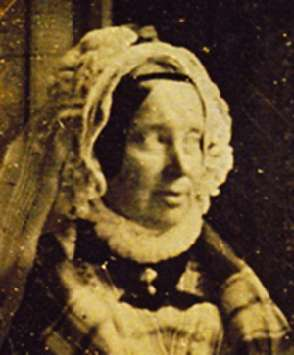
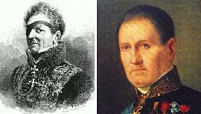

Борис Акунин
Мой календарь
Альфа-самцы заблуждаются, считая, что женщины их обожают. Наглядный пример - поведение жены главного альфа-самца мировой истории Наполеона Бонапарта. Сегодня день ее памяти - императрицы Марии-Луизы (1791–1847).
Дочь австрийского кесаря стала для Наполеона трофеем победоносной войны. «Великий Человек» (Le Grand Homme), как все его тогда называли, взял в жены самую именитую невесту тогдашнего мира. Однако нельзя сказать, что могучая аура триумфатора произвела на молодую женщину сильное впечатление. Когда Бонапарт в первый раз лишился престола, Мария-Луиза за ним на Эльбу не поехала. Тем более не потащилась на какую-то убогую Святую Елену. Жила себе славно в Европе, терпеливо ждала, когда уже наконец овдовеет.
Вернула себе матримониальную свободу в отличном тридцатилетнем возрасте и потом сходила замуж еще дважды. Оба раза за людей скромных и нешумных, абсолютно не альфа-самцов. И оба раза вполне счастливо, по сердечной любви.
При этом Марию-Луизу совершенно не смутило, что после великого императора ее супругами номер два и три стали всего лишь графы. Главное - она сама их выбрала и сама сделала им предложение.
Один был молодец хоть куда, другой - умник.
Учитесь, за кого выходить замуж, у Марии-Луизы, девушки.